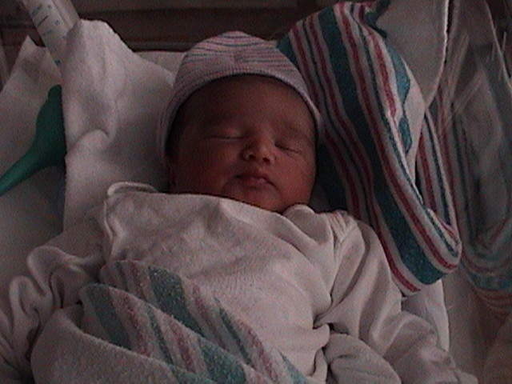
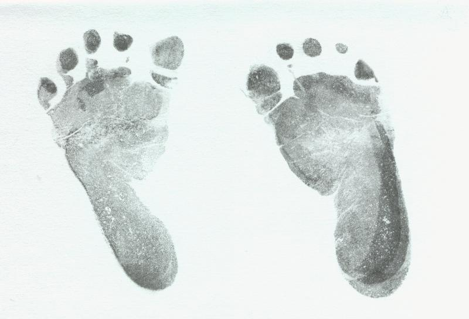

"I have had my invitation to this world's festival, and thus my life has been blessed. My eyes have seen and my ears have heard."
— Rabindranath Tagore, Gitanjali


This page, written in the days after his arrival, was meant to blossom with pictures and anecdotes of the youngest member of the family as the days rolled by. It did, for a while. The stories from those early years will find their way here in time.
Originally written April 2002 · Restored 2026